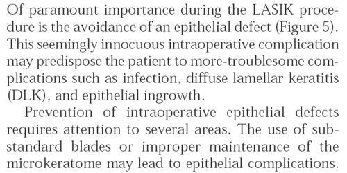
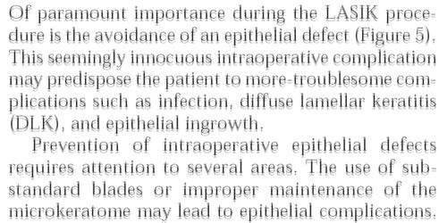
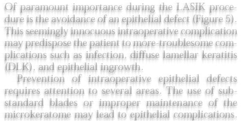
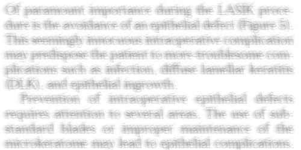

Because the visual distortions resulting from LASIK and other refractive surgeries impact the ability to see fine detail, reading may be difficult after LASIK. Ghosts images may appear in a patient's near vision. For some patients, the quality of near vision seems to fluctuate with tear film quality, so that reading becomes difficult in air conditioned, low humidity environments, and may even vary throughout the day. Rarely, a patient may be unable to read at all. Patients without visual disturbances after LASIK may find reading difficult due to dry eyes and pain. Reading may also be complicated by a patient's loss of accomodation in an over-40 eye; however, patients who are naturally near-sighted (myopic) may retain the ability to read and see up close by avoiding LASIK.



